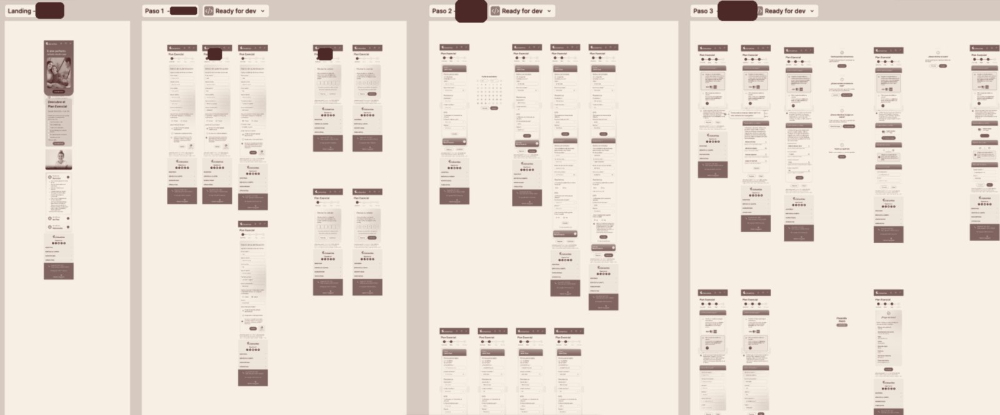
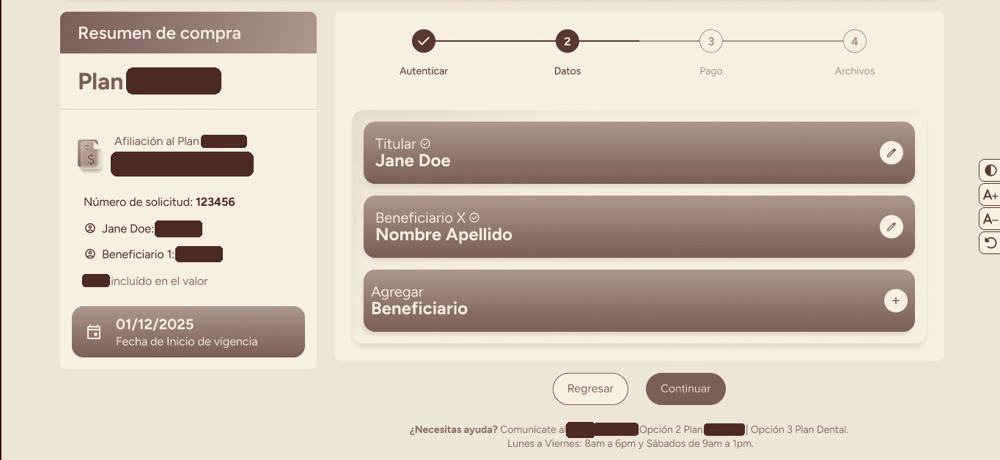
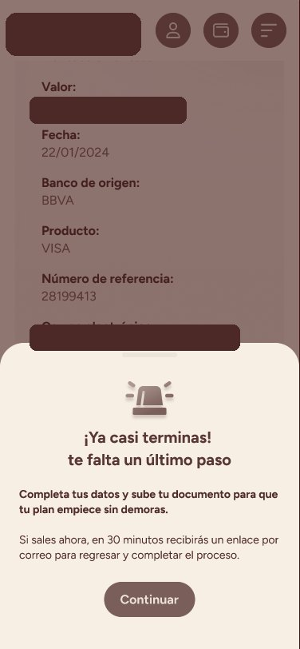

Two plans, one flow, no advisor
The client sold a general health plan and a dental plan online, but the whole purchase lived inside an embedded third-party tool. Its usability problems had been diagnosed before I arrived. The business goal was double: fix the experience, and stop paying a third party by moving to the client’s own in-house development, with a flow that supported self-service.
The two plans were separate products but shared most of their sales logic, so I designed them in parallel and resolved their small differences inside one system.
The user: someone buying health coverage for themselves or their family, alone, on a phone or laptop. Documents, beneficiaries, a one-time code, a payment. The friction is natural and high, and the most expensive place to lose someone is right around paying.
The happy path is the easy part
I took the flow from landing to confirmation: authentication with a one-time code, personal data, beneficiaries, payment and document upload, in desktop and responsive. I benchmarked market references specifically to inform the move to in-house development, and used it as input for the design decisions. Several graphic explorations were dropped because the business wanted something visually simpler, and I let them go.
The part nobody had scoped was what happens when things go wrong: invalid coverage, exceeded limits, connection errors and a failed code validation. I designed those paths and delivered them as a standalone artifact, so engineering had something to build against beyond the happy path.
WCAG 2.1 A and AA criteria were applied during design, not after: the contrast and text-size controls are visible in the desktop prototype.



Testing the hypothesis, not the colors
The test had one written hypothesis: a clear process with the fewest possible questions before payment reduces the chance of abandonment. I ran it as a remote, unmoderated test in Maze on the Figma prototype, measuring comprehension, usability and clarity.
23 participants aged 18 to 60 (average 39), with mixed digital confidence: 49% high, 38% medium, 13% low.
High task success hid two real problems. In task 2, the “Add beneficiary” button was hard to find and people couldn’t tell whether the person had been added. “it looked like a banner”, one wrote; another, “at one point I didn’t know if I had added the other person to the plan.” Misclick rates between 57.6% and 72.8% told the same story from a different angle.
Task 3 was the biggest. Asked “Was it clear that the process hadn’t finished after you paid?”, 16 people said yes and 6 said no: 27%.
Friction where friction costs the most
In this flow, paying isn’t the end: the person still has to complete their data and upload an ID before the plan can start. Someone who leaves after paying has given the company money and gets nothing back: a paid but incomplete enrollment, and a support call waiting to happen.
I proposed a mandatory continuation step right after payment: “Almost done, one last step”, with the reason and a safety net: leave now, and a link to finish arrives by email in 30 minutes.
The objection
PM and business pushed back: an interruption right after paying might confuse people and make them abandon.
The reframe
They were arguing the same risk I was, in reverse. I answered with the test result and documented evidence of how this kind of interaction reduces abandonment, not with my preference.
The step was adopted, along with the other three changes from the test: clearer signposting of “Add beneficiary”, a save button with visible confirmation, and a friendly clarification on the last step.


What I can and can’t show
What I took from it: evidence changes the shape of the conversation. The question stopped being “should we add friction?” and became “where does friction cost us less than losing the person?”
Client withheld under NDA. Screens are from my Figma files with brand, prices and personal data removed and recoloured.